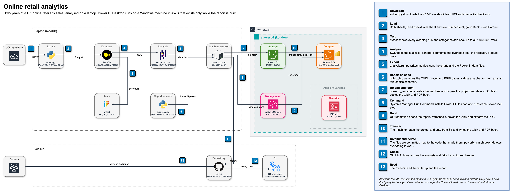
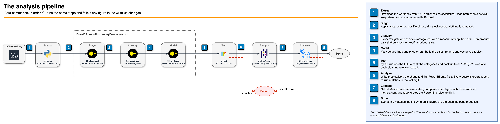
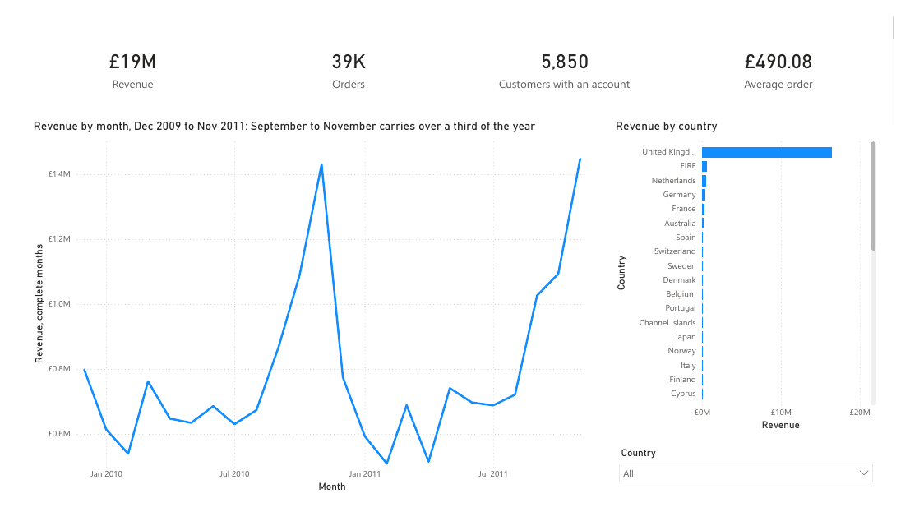

How it works, why it was built this way, everything that went wrong on the way, and how to talk about it in an interview.
Repo: github.com/gumagatsby/retail-analysis-case-study

I took two years of a real UK online retailer's transactions, 1,067,371 rows, accounted for every one of them, answered six questions its owners would ask in plain English with the statistics behind them, and built a Power BI report as code on a Windows machine in AWS that existed only while the report was made.
The data is real: Online Retail II from the UCI Machine Learning Repository (CC BY 4.0), every transaction of an anonymous UK gift-ware retailer from December 2009 to December 2011. It has no shops, many customers are small businesses buying to resell, and it sells to 43 countries. The questions are the ones its owners would ask; nobody from the business commissioned this. A good answer is in plain English, with the figure behind it and how sure it is, and every row of the spreadsheet is accounted for.
| Piece | Technology | Job |
|---|---|---|
| Extract | Python, pandas | Downloads the workbook, checks its checksum, reads both sheets as text with sheet and row number kept |
| Cleaning and model | DuckDB, three plain SQL files | Types, one category per row with a reason, the sales, returns and customers tables |
| Tests | pytest on the full dataset, ruff | Every cleaning rule checked against all 1,067,371 rows |
| Analysis | pandas, SciPy, statsmodels, matplotlib | Cohorts, segments, the significance test, the forecast, product pairs, the charts |
| Report | Power BI Desktop, written as a Power BI Project (TMDL, PBIR) | Three pages for the owners: overview, customers, products and returns |
| Windows machine | EC2 m7i-flex.large, Windows Server 2022, S3, Systems Manager | Runs Desktop, which needs Windows; deleted as soon as the files were saved |
| CI | GitHub Actions | Rebuilds from the raw workbook and fails if any figure or the Power BI project changes |

Every row gets exactly one category, tested in order, and the categories add back up to the 1,067,371 rows in the workbook.
| Category | Rows | Why it's set aside, or kept |
|---|---|---|
| Sales | 1,015,071 | Kept |
| Copies of the same nine days in both sheets | 22,523 | Both sheets hold 1 to 9 December 2010, row for row. A test proves the copies are identical |
| Returns and cancellations | 17,974 | Invoice starts with C |
| Postage, fees, adjustments, vouchers | 5,807 | Not merchandise. Amazon fees alone total −£260,764 |
| Stock write-offs | 3,391 | Negative quantity on an ordinary invoice, with no price or customer |
| Unpriced lines | 2,599 | Free items and notes such as "update" |
| Bad debt entries | 6 | Invoice starts with A |
Voided lines: 1,318 lines, £349,825, each a sale reversed in full by the same customer within 24 hours, matched one to one. The two largest orders in the data, 80,995 paper craft birds and 74,215 storage jars, were cancelled within 16 minutes. Price errors: 4 lines, £41,644, such as a picnic basket keyed at £649.50 instead of £4.95. Both stay in the data and are left out of the analysis.
11,695 lines repeat another line on the same invoice exactly. The usual step is to drop them, but the till puts one product on several lines (11,038 product-and-invoice pairs have lines with different quantities), so an identical repeat is most likely a second scan. They're kept; dropping them would change revenue by £56,911, 0.3%, so no finding depends on it.
| Question | Answer | Confidence |
|---|---|---|
| Q1. Returns | 1.9% of sales overall, but white cherry lights come back 35.1% of the time, pink 28.5%, a flannel 25.9% and a curio cabinet 22.8%. Look at the product first. | High |
| Q2. New customers | 42% of new customers order again within three months (95% interval 39% to 45%). December's Christmas buyers come back least: 18%. | Medium: 985 customers |
| Q3. Who carries it | A quarter of customers bring in 70% of the money. 842 former regulars who spent £1.46 million haven't ordered in a year. | High |
| Q4. The season | September to November is 36% of the first year and 38% of the second. "Same month last year" was out by 5.6% in an average month; plan with a margin of 5 to 10%. | Low to medium: one season to learn from |
| Q5. What sells together | All 50 of the most strongly linked pairs are two items from the same range. Sell the ranges as sets. | High |
| Q6. Abroad | A typical overseas customer's order is £119 bigger (95% interval £89 to £149; Mann-Whitney, p < 0.001), tested per customer. | High |
The data can't say why customers return goods or lapse; each recommendation says how to find out. The full write-up is docs/03-results.md.
Three pages for the owners. The saved report is powerbi/RetailSales.pbix, and powerbi/RetailSales.pdf is the same report exported from Desktop.

powerbi/build_pbip.py writes a Power BI Project: the data model in TMDL and the pages in PBIR, both plain text. powerbi/validate.py checks every JSON file against the schema it names, checks that every field a visual uses exists in the model, and checks the TMDL indentation, all before Desktop sees it. CI regenerates the project and fails if it differs from the committed one.
scripts/powerbi_vm.sh up creates the machine, an IAM role that can use Systems Manager and one S3 bucket, and copies the project and data through that bucket. Setup and every later step run through Systems Manager Run Command, so no port is opened for automation. Desktop was driven by PowerShell scripts run as scheduled tasks in a logged-in session, using Windows UI Automation, with a screenshot checked after each step. fetch copies the .pbix and PDF back, and down deletes everything, then lists anything still tagged with the project. The machine cost $0.198 an hour; the total is recorded once billing data is available.
All of these happened on this build. The full story of each is in docs/04-build-log.md.
| Problem | Cause | What I did |
|---|---|---|
| pip stalled for ten minutes with no output | Not found; almost no CPU use while it hung | Installed one package at a time with a timeout and visible progress; every version pinned |
| Risk of pandas guessing types | A guessed type can turn C489449 into a missing value | Read everything as text, applied types in SQL, checked the workbook's checksum every run |
| Nine days counted twice | The two sheets overlap, row for row | Set the first sheet's copies aside, with a test proving they're identical |
| £390,000 of keying errors looked like sales and returns | Orders cancelled within minutes; a price keyed 130 times too high | One-to-one void matching within 24 hours; a narrow 20-times-median price rule that names its 4 lines in a test |
| New-customer numbers seemed to collapse | The data starts in December 2009, so early "new" customers weren't new | Only customers first seen from December 2010 count as new |
| The retention chart's last diagonal fell sharply | December 2011 stops on the 9th | Partial months left blank |
| The smarter forecast did worse | The first half of 2011 ran below 2010, the autumn above | Used the plain method and said why; the chart now plots that one |
| The same analysis gave a different interval | DuckDB returns rows in no guaranteed order, so the bootstrap drew from a different list | ORDER BY on every query that feeds a figure; two runs match to the last digit |
| Problem | Cause | What I did |
|---|---|---|
Wrong schema path in the first .pbip | My mistake | The validator caught it before anything reached Windows |
| A t3.xlarge launch refused after the dry run passed | A dry run checks permissions, not Free plan rules | m7i-flex.large, which the plan allows, with 8 GiB of memory |
| A failed launch reported as success | Output piped through sed; a pipeline reports its last command's exit code | Report the script's own exit code |
| The command waiter gave up during a 700 MB download | AWS's built-in waiter stops after a few minutes | Poll until the command really ends |
| Desktop's TMDL parser wouldn't load in PowerShell 5.1 | Loading Desktop's assembly failed there | Dropped that check; Desktop is the parser |
| "Invalid indentation" on a column name | The apostrophe in A's ended the quoted name | Apostrophes doubled in the generator; the validator reads them back |
| Automation blocked: hidden controls, a split button, an autocomplete list over Save | Save As shows its controls to UI Automation only as unnamed panes | Clicked by position, checked a screenshot after every step |
| The first PDF copy was one page | Export writes a PDF per page to the same temporary folder | Copy the named report file |
| The PDF clipped a table column and the slicer | Auto column widths; the slicer's list mode | Fixed column widths, a dropdown slicer, rebuilt and checked before deleting the machine |
"Why compare customers rather than orders in the significance test?"
Orders from the same customer aren't independent: a few very active overseas customers would dominate an order-level test. So each customer contributes one value, their median order. Order values are heavily skewed, so I used Mann-Whitney rather than a t-test, and a bootstrap for the interval on the difference.
"How do you know the cleaning didn't lose rows?"
Every row gets exactly one category, and a test checks the categories add back up to the 1,067,371 rows in the workbook. Each rule that sets rows aside has its own test, on the full dataset, not a sample. CI rebuilds from the raw workbook and runs them on every push.
"Why did the simpler forecast win?"
With two years of months there's one seasonal cycle to learn from. Scaling by the recent trend assumed the first half of 2011 told you about the autumn, and it didn't. I scored both on six months the methods hadn't seen, and the plain one was out by 5.6% against 9.7%. The honest answer is last year's month with a margin, and another year of data before anything cleverer.
"Why not just open Power BI and click?"
Because the report should be reviewable and repeatable like the rest of the code. As text it's diffed in pull requests, checked against Microsoft's schemas, and CI fails if it drifts from the generator. Desktop only renders and saves it. The Windows machine exists for the hour that takes.
"Why keep the repeated identical lines?"
I checked how the till records a basket before cleaning: it adds a line per scan, often with different quantities, so an identical repeat is most likely a real second scan. Then I measured the alternative: dropping them changes revenue by 0.3%, so no finding depends on the choice.
| Check | Result |
|---|---|
| Cleaning tests on all 1,067,371 rows (pytest) | 8 of 8 pass |
| Lint (ruff) | Pass |
| Analysis re-run against the committed figures | All figures match |
| Power BI project regenerated | No difference from the committed project |
| Power BI schema and field checks | 21 JSON files, 44 model fields, no problems |
| GitHub Actions CI | Green |
| Windows machine and everything it created | Deleted: instance, volume, key pair, IAM role, bucket (checked at teardown) |